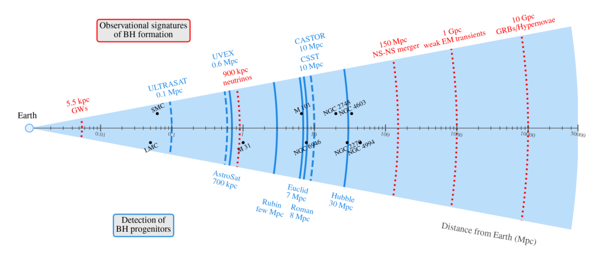
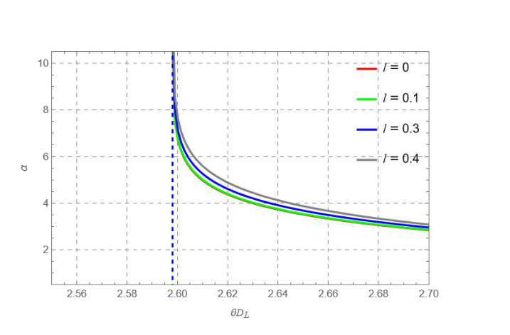
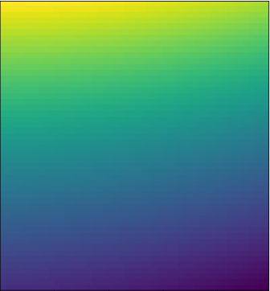
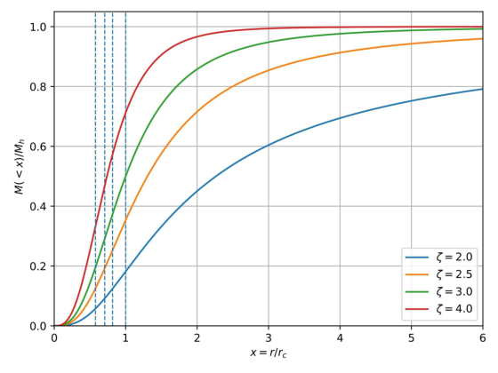
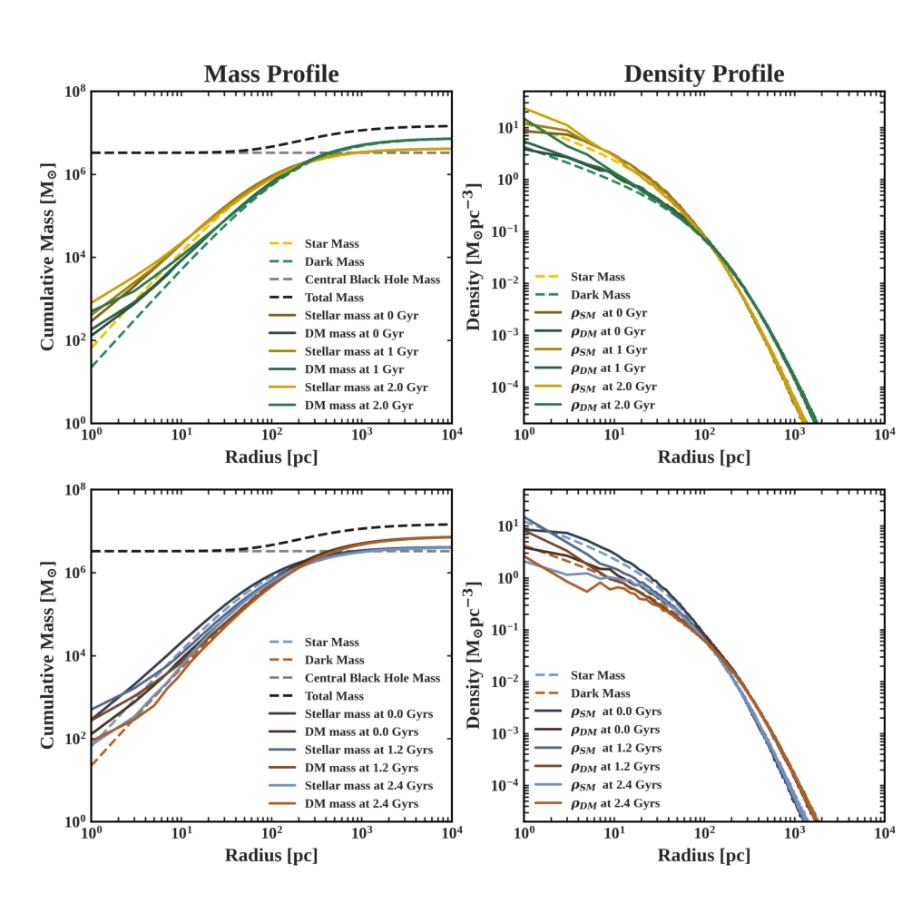
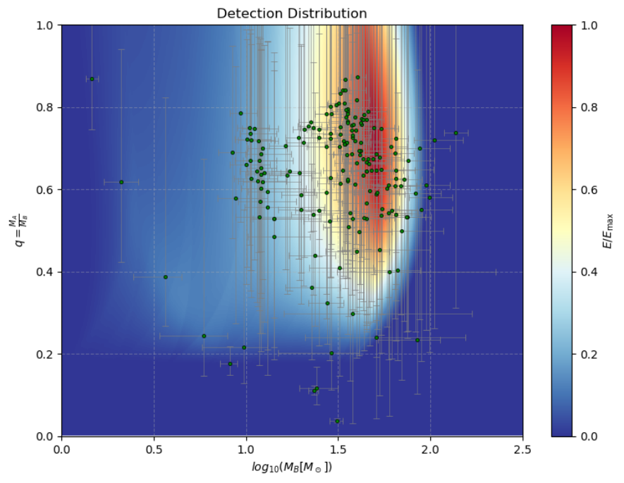
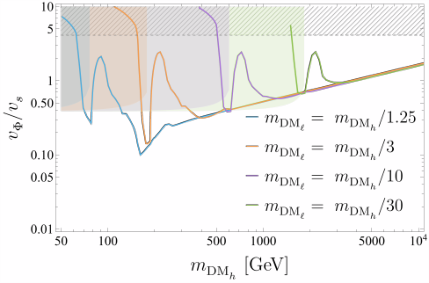

Galaxies
While the connection between massive stars and supernova explosions is well established observationally, the link between massive stars and black hole formation remains elusive.…
No papers in today's selection for this topic.

While the connection between massive stars and supernova explosions is well established observationally, the link between massive stars and black hole formation remains elusive.…
Observations of ultra-dense substructures in strong lensing systems challenge the standard cosmological model at small scales. Self-interacting dark matter (SIDM), as an alternative to the cold and collisionless dark matter (CDM) of the standard cosmological model, provides a natural mechanism for f…

We study Bardeen-like regular black holes without Cauchy horizons via gravitational lensing. In the weak field, the deflection angle receives a positive $\ell$-dependent correction, producing a slightly larger Einstein ring.…

We investigate the gravitational lensing of massless particles around a Kerr-Sen black hole immersed in a magnetized, cold, pressureless plasma medium. Both homogeneous and inhomogeneous plasma distributions are considered in this study to mimic realistic astrophysical environments.…
VLBI measurements of the sizes of compact extragalactic radio sources, jetted active galactic nuclei, provide data for probing the angular size--redshift relation, offering a complementary test to other distance--redshift methods.…

The radial acceleration relation reveals a nearly universal acceleration scale of order $10^{-10}\,\mathrm{ms^{-2}}$ in galactic dynamics, whose origin remains unexplained within conventional cold dark matter scenarios.…

In this study, we investigate the dynamical evolution of a massive binary black hole (MBHB) in the Leo I dwarf spheroidal galaxy model and examine how dark matter along with stellar matter's gravitational interactions influence its long-term behavior.…

We review the role of primordial black holes (PBHs) for illuminating the dark ages of the cosmological evolution and as dark matter (DM) candidates. We elucidate the role of phase transitions for primordial black hole formation in the early Universe and focus our attention on the cosmological QCD ph…

We study a two-component pseudo-Nambu-Goldstone-boson (pNGB) dark matter (DM) model motivated by boosted dark matter (BDM). The model is based on a complex scalar field charged under a dark $\text{U}(1)_V$ gauge symmetry, with a softly broken global $\text{SU}(3)_g$ symmetry that is spontaneously br…
We show that the $\mathrm{SU}(3)_C \times \mathrm{SU}(3)_L \times \mathrm{U}(1)_N$ model with right-handed neutrinos naturally accommodates a viable sub-MeV dark matter (DM) candidate realized as pseudo-Goldstone boson that acquires tiny mass through gravitational effects.…